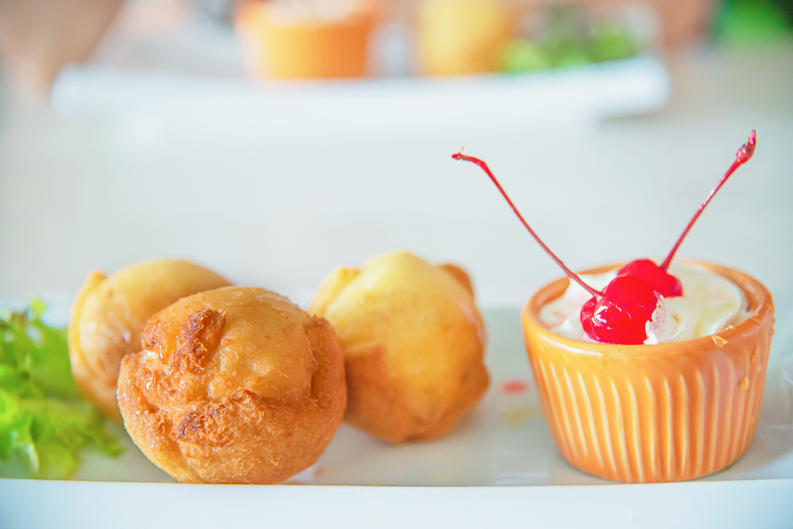

רכיבים לפחזניות:
קורט מלח
2 כפות סוכר
4 כפות שמן קנולה או שמן קוקוס מומס
1 כוס מים
1.5 כוסות קמח לבן
4 ביצים
רכיבים למלית מתוקה- קרם וניל:
חצי גביע גבינת ריקוטה 5%
כוס חלב 1%
3 כפות אינסטנט פודינג בטעם וניל או כל טעם שאוהבים
חצי כפית גרידת תפוז / לימון
מעט תמצית וניל – אם רוצים
רכיבים למלית מלוחה-קרם טונה(פרווה):
2 קופסאות טונה משומרת במים, סחוטה היטב
כף שמן זית
קופסת אנשובי מסוננת היטב
כף צלפים – אם רוצים
חצי בצל סגול קטן
כף קטשופ
כפית אורגנו יבש
אופן הכנת הפחזניות:
שמים בסיר בינוני את המים, השמן, הסוכר והמלח.
מניחים על אש בינונית ומביאים לרתיחה.
מסירים מהאש, מוסיפים את הקמח, ומערבבים במהירות.
מחזירים את הסיר לכיריים על אש קטנה,
וממשיכים לערבב עד שנוצר בצק אחיד בגוש אחד,
מסירים מהאש ומצננים כמה דקות.
מחממים את התנור לחום גבוה (200 מעלות), ומרפדים 2 תבניות בנייר אפייה.
מעבירים את העיסה לקערה ומערבבים בעזרת מערבל ידני.
מוסיפים את ביצה אחת וממשיכים לערבל עד לאיחוד מלא.
חוזרים על הפעולה עם כל ביצה בנפרד.
מעבירים את העיסה לשקית זילוף, ומזלפים תלוליות בקוטר 3 ס”מ
על התבניות במרחק 4-5 ס”מ זו מזו (הפחזניות תופחות בתנור).
אופים כעשרים דקות או עד שהפחזניות מזהיבות.
זמן האפיה משתנה בין תנור לתנור, חשוב לשים לב שלא לשרוף. מוצאים מהתנור.
מנקבים בקיסם את החלק התחתון של הפחזניות
על מנת לתת לאוויר החם שהצטבר בפנים להתאדות.
משאירים את הפחזניות הפוכות (הנקב כלפי מעלה).
כאשר הפחזניות מתקררות, מזלפים את המילוי הנבחר לבפנים
באמצעות שק זילוף עם צנטר. ככפית לכל יחידה.
אופן הכנת המלית המתוקה:
מערבבים את האיסטנט פודינג עם החלב.
בקערה נפרדת מערבבים היטב את הגבינה עם גרידת התפוז ותמצית וניל.
מאחדים את הפודינג עם הגבינה, עד למרקם אחיד.
מזלפים לתוך הפחזניות ככפית מהמילוי באמצעות שק זילוף וצנטר
או חותכים את הפחזניות וממלאים באמצעות כפית.
אופן הכנת המלית המלוחה:
מכניסים את כל הרכיבים למעבד מזון ומפעילים לכמה דקות עד לקבלת מרקם אחיד.
מאכסנים במקרר ללילה או לכמה שעות להתייצבות.
מזלפים לתוף הפחזניות ככפית מהמילוי באמצעות שק זילוף וצנטר
או חותכים את הפחזניות וממלאים באמצעות כפית.
